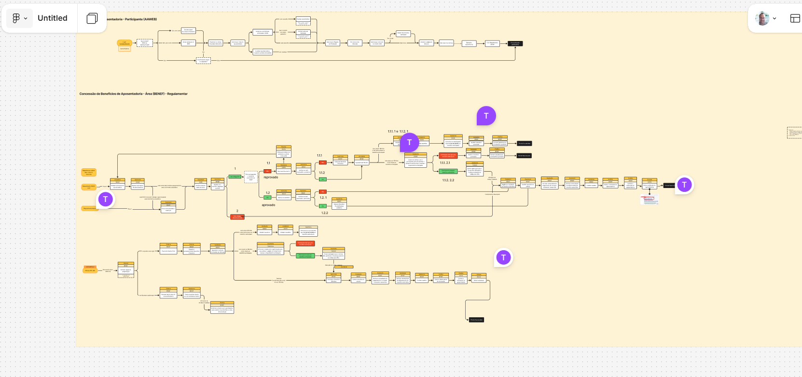

Império
↳ representa
O modelo tradicional: hierárquico, centralizado e cheio de aprovações.
Há muito tempo, numa organização não tão distante… a PREVI prosperou como um grande IMPÉRIO: forte, organizada e poderosa.
Mas o peso da centralização, das aprovações e dos silos tornou seus movimentos lentos. O mercado mudou. Os associados querem respostas rápidas, e os planos fechados demais já não acompanham a realidade.
Das bordas da galáxia surge a REBELIÃO ÁGIL — pessoas e times que acreditam que não basta cumprir tarefas: é preciso entregar VALOR. Não basta seguir o plano: é preciso aprender com o cliente.
A Força Ágil conecta tudo — cliente, negócio, tecnologia, pessoas, propósito e aprendizado. E quando uma organização aprende a usá-la, decide melhor, prioriza o que importa e se adapta enquanto avança.
A jornada começa agora. Que a Força Ágil esteja com você.
Cada símbolo da saga tem um par na jornada ágil da empresa. Use este mapa como bússola da oficina — do lado sombrio da burocracia à Força que conecta valor, pessoas e aprendizado.
O modelo tradicional: hierárquico, centralizado e cheio de aprovações.
Comando e controle, medo de errar, silos e excesso de burocracia.
Pessoas e times que querem trabalhar de forma colaborativa e adaptável.
Lideranças servidoras, Scrum Masters e Agile Coaches: facilitadores da mudança.
Propósito, valor para o cliente, colaboração e aprendizado contínuo.
Cultura baseada em poder, controle, vaidade e decisões centralizadas.
Ferramentas, sistemas, automações, dados e métricas a serviço do time.
As práticas ágeis: Scrum, Kanban, dailies, retrospectivas, reviews e backlog.
Desenvolvimento do mindset ágil e de novas competências.
Grandes projetos fechados, caros, rígidos e cheios de risco.
Times pequenos, rápidos, adaptáveis e criativos.
Mentores que ajudam a organização a desaprender velhos hábitos.
A Força, nessa jornada, é a energia que liga cliente, negócio, tecnologia, pessoas e propósito. Ela se manifesta em quatro escolhas — e em doze princípios que sustentam a prática.
Toda transformação tem seus heróis e suas naves. Conheça os papéis que fazem a Força Ágil fluir pela organização.
Scrum Masters, Agile Coaches e facilitadores. Removem impedimentos, protegem o foco e servem ao time em vez de comandá-lo.
Ajudam a organização a desaprender velhos hábitos e a equilibrar estrutura com adaptação.
Squads rápidos, adaptáveis e criativos. Onde a Estrela da Morte falha pela rigidez, a Falcon vence pela agilidade.
Sistemas, automações e métricas que apoiam decisões — sem nunca substituir o julgamento humano.
Scrum, Kanban, dailies, retrospectivas, reviews e backlog. Ferramentas elegantes — e perigosas se mal usadas.
Pessoas que decidem entregar valor, não só tarefas — e colaboram em torno de um objetivo comum.

Olá! Eu sou o PV-1. Vou te acompanhar nessa jornada. Comece pelo autodiagnóstico aqui embaixo — depois é só cumprir missões e subir de patente. Que a Força Ágil esteja com você!
Para cada tema, escolha o nível que melhor descreve você hoje. As respostas viram XP inicial.
Cada missão concluída soma XP e te aproxima da próxima patente. Marque conforme avança na oficina.
Existe um lado sombrio da transformação: quando a empresa usa os nomes da agilidade, mas mantém o comportamento antigo. Parece ágil — mas continua sendo comando e controle com nomes novos.
"Na transformação ágil, o maior inimigo não é a falta de framework. É o lado sombrio da cultura: controle excessivo, medo de errar, silos e foco em tarefas em vez de valor." — Mantra da Oficina Força Ágil
Nenhuma transformação acontece em linha reta. A jornada ágil tem seu despertar, seu contra-ataque e seu retorno do valor.
A empresa percebe que o modelo atual está ficando lento: muitos projetos, muitas dependências, muito retrabalho e pouca visibilidade. Surgem os primeiros "Jedi" — pessoas que começam a falar de cliente, fluxo, valor, colaboração e melhoria contínua.
DespertarA mudança começa, mas a cultura tradicional reage. As áreas querem manter controle, gestores temem perder poder e as métricas antigas continuam pressionando comportamentos antigos. É a fase mais difícil — adotar agilidade não é implantar cerimônias, é mudar decisões, estruturas e incentivos.
ResistênciaA organização amadurece. Os times ganham clareza de propósito, trabalham com prioridades reais, reduzem desperdícios e aprendem com entregas menores. A liderança deixa de ser comando e passa a ser servidora — remove impedimentos, dá direção e protege o foco. Agilidade não é velocidade a qualquer custo: é responder melhor às mudanças, entregando valor de forma sustentável.
ValorEficiência com foco no futuro sustentável: trabalhar de forma mais simples e colaborativa, priorizando o que realmente gera valor, reduzindo desperdícios e usando melhor nossos recursos — para que cada entrega faça diferença na vida dos associados, hoje e no futuro.
Estes são mapas reais da Concessão de Benefícios de Aposentadoria (fluxos AAWEB e BENEF). São o tipo de processo denso, centralizado e cheio de etapas que a Força Ágil vem simplificar — transformando grandes estruturas rígidas em fluxos de valor.

Na oficina, mapas como este viram alvo das práticas ágeis: simplificar, priorizar e fazer o valor fluir.
O Império capturou os planos da base Rebelde. Você é um agente da Resistência. Tome decisões rápidas, adapte-se aos ataques e ganhe pontos. Cada escolha ágil te aproxima do topo do ranking dos Heróis da Galáxia.
A jornada Jedi não se faz só de ferramentas e rituais — é uma nova forma de pensar e agir. Entre para a Rebelião e ajude a Previ a desaprender velhos hábitos.
Descubra seu nível na Força — de Youngling a Mestre.
Agosto, Setembro ou Novembro. Garanta seu lugar no esquadrão.
Traga seu time e desperte o valor para os associados.